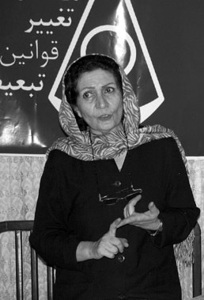

پذيرش > سایت نوشته ها > تغيير معیارهای همسرگزيني در ايران
 مهريه هاي سنگين نتيجه نرخ بالاي بيكاري دختران مهريه هاي سنگين نتيجه نرخ بالاي بيكاري دختران

 تغيير معیارهای همسرگزيني در ايران تغيير معیارهای همسرگزيني در ايران
13 مهر 1387 - کانون زنان ایرانی / پژوهش شهلا اعزازی - نسخه قابل چاپ
مهريه هاي سنگين نتيجه نرخ بالاي بيكاري دختران است. اين نكته اي بود كه شهلا اعزازي، استاد دانشكده علوم اجتماعي دانشگاه تهران در سخنراني اش با موضوع «تغييرات همسرگزيني در ايران» به آن اشاره كرد.
اعزازي كه معتقد است تغييرات اجتماعي در ازدواج وتمايل افراد به انتخاب همسر تاثير مي گذارد مي گويد: «علاوه بر رشد شهرنشيني و افزايش سطح تحصيلات زنان ،تعداد شاغلان زن تا سال 1355 ، 13 درصد و به طور مرتب رو به افزايش بود اما پس از انقلاب تا سال 1365 تعداد زنان شاغل رو به كاهش گذاشت و در حال حاضر تقريبا به همان تعداد پيش از انقلاب يعني 16 درصد رسيده است و تمام اين تغييرات بر روند همسرگزيني تاثير گذاشته است.»
او به پژوهشي كه در سال 83 انجام داده اشاره مي كند: «در اين پژوهش با سه نسل از زنان در مورد مسايل ازدواج مصاحبه كرديم. نسل اول 65 سال سن يا بيش تر داشتند و تقريبا تا سال 1340 ازدواج كرده بودند. اين نسل منشا روستايي داشتند و بيش تر آن ها بي سواد يا كم سواد بودند و در جامعه اي سنتي زندگي مي كردند و پس از ازدواج، به عنوان زن خانه دار نقش ايفا مي كردند.
اما نسل دوم كساني بودند كه از اواخر دهه 40 تا اوايل دهه 50 ازدواج كرده بودند كه البته اين تحقيق تنها روي دختران دانشجو كه دگرگوني روي آن ها شديدتر بود انجام شده است.»
اعزازي در ادامه مي گويد: «در زمان نسل دوم، جنبش هاي اجتماعي و دانشجويي در حال شكل گيري و مقاومت در برابر سنت ها بسيار زياد بود. دانشگاه هاي ايران هم تا حدودي سياسي بودند. از طرف ديگر امكان اشتغال براي دختران فراهم بود و برخورد ميان دو جنس نيز هم در دانشگاه و هم در محيط كار آزادانه و به راحتي انجام مي گرفت.» به گفته اعزازي نسل سوم اما دختراني بودند كه در اواخر سال 60 تا اواخر سال 70 ازدواج كرده بودند. در آن زمان در حالي كه شرايط جهاني به سوي مدرن شدن پيش مي رفت، در ايران بر ازدواج سنتي تاكيد مي شد. در اين دوره درآمد افراد كاهش يافته و تورم افزايش يافته بود و در جامعه، دانشگاه و محيط كار جدايي بين دو جنس عملا وجود داشت. اعزازي در مصاحبه خود با اين سه نسل، سوالات متعددي از جمله اين كه چطور همسر خود را انتخاب كرده اند يا مهريه و جهيزيه و هزينه هاي ازدواج آن ها به چه صورت بوده و وظيفه زن و شوهر را در ازدواج چطور مي بينند، مطرح كرده است.
اين استاد دانشگاه با جمع بندي شيوه هاي همسر گزيني اين سه نسل مي گويد: «ازدواج براي نسل اول روند طبيعي زندگي بود و نسل دوم براساس احساسات و افكار خود همسر آينده اش را انتخاب مي كرد. اما نسل سوم براساس محاسبات عقلاني پيش مي رود و محاسبات اقتصادي نقش عمده اي را در اين مراسم ايفا مي كند.»
او مثالي مي زند: «در نسل اول دختر حق حرف زدن در مورد مهريه را نداشت و كسي هم نظر او را نمي پرسيد و مهريه معمولا يك دانگ خانه، دو دانگ باغ، مقداري نقره و... بود و زنان نسل اول هيچ گاه به فكر درخواست مهريه خود نبودند.»
اعزازي سپس ديدگاه نسل دوم را درباره مهريه مطرح مي كند: «نسل دوم براي مهريه ارزشي قائل نبودند زيرا كار مي كردند و تحصيلات داشتند. آن ها به خاطر استقلال مادي اي كه داشتند نيازي به حمايت هاي اين چنيني احساس نمي كردند.»
با اين حال مساله اي كه توجه اعزازي را به خود جلب كرده اين است كه اين افراد با اين كه براي مهريه اهميتي قائل نبوده اند اما مي خواهند دخترشان با فرد ثروتمند و تحصيلكرده اي ازدواج كند و مراسم عروسي مفصل براي دخترشان بگيرند. اعزازي سپس به وضعيت نسل سوم اشاره مي كند: «نسل سوم اما درخواست مهريه هاي بالا داشتند و استدلال شان اين بود كه مهريه نشان دهنده علاقه مرد به زن و نشان دهنده اعتبار اجتماعي دختر است.»
اعزازي در ادامه نتيجه گيري مي كند: «در جامعه اي كه زنان به صرف وجود خود داراي اعتبار نيستند و فقط به علت قرار گرفتن در رابطه با فرد ديگري مانند پدر يا شوهر خود، اعتبار اجتماعي پيدا مي كنند، محاسبات اقتصادي نقش عمده اي در ازدواج ايفا مي كند.»
او معتقد است كه اين وضعيت كه به دليل نبود تامين اجتماعي و نرخ بالاي بيكاري دختران ايجاد شده بايد تغيير كند: «با مقايسه نرخ بيكاري زنان و مردان شايد بتوانيم حق را به دختران بدهيم چرا كه هميشه نرخ بيكاري زنان بالاتر از مردان بوده است. براي مثال در سال 1380، نرخ بيكاري مردان 13 درصد و نرخ بيكاري زنان 19 درصد بوده است.» او همچنين معتقد است كه نرخ بيكاري زنان با بالا رفتن تحصيلات آن ها افزايش مي يابد: «در سال 80، نرخ بيكاري زنان شهري 28 درصد و نرخ بيكاري زنان روستايي 11 درصد بود. به طوري كه زني كه تحصيلات ندارد، به كارهاي ساده مشغول مي شود. بنابراين به خاطر نرخ بالاي بيكاري دختران، آن ها در تلاشند تا دستاويز زندگي آينده خود را از طريق يك مرد تامين كنند.»
اعزازي درباره نقشي كه دولت در اين زمينه مي تواند داشته باشد مي گويد: «دولت در حالي كه براساس قانون اساسي موظف است براي تك تك افراد جامعه، شغل مناسبشان را پيدا كند، سياست هاي اجتماعي اي مانند سهميه بندي جنسيتي را به وجود آورد تا دختران را به خانه براند و در اين شرايط، دختران هويت و اعتبار اجتماعي خودشان را تنها از طريق ازدواج پيدا مي كنند. در حالي كه دولت با ساختارهايي كه در دست دارد بايد مسايل تامين اجتماعي آن ها را به عهده بگيرد.»
اين استاد دانشگاه دليل ديگر بالا بودن مهريه ها را برخوردار نبودن زنان از حقوق كافي خود مي داند: «دختران از مهريه به عنوان يك حربه استفاده مي كنند تا از بروز مشكلاتي كه در زندگي آن ها به وجود مي آيد، جلوگيري كنند.» نكته قابل توجه در اين تحقيق براي اعزازي اين بوده كه هيچ يك از دختران نسل سوم، شرايط ديگري را از جمله شروط ضمن عقد يا شروط ديگر از جمله حق طلاق، حق تحصيل و حق سفر را در ازدواجشان نخواسته اند هر چند كه تعدادي از آن ها از اين مساله آگاه بوده اند. چرا كه معتقد بودند كه شگون ندارد يا به خانواده داماد برخواهد خورد. اعزازي كه درباره اشتراك مالي اين سه نسل نيز تحقيق كرده مي گويد: «در نسل اول، شوهر كار مي كرد تا خانواده را تامين كند در عين حال فرد دستور دهنده در خانواده بود. در نسل دوم، زن و مرد هر دو كار مي كردند و در زمان بازگشت به خانه، كارها را به صورت اشتراكي انجام مي دادند. آن ها اشتراك مالي داشتند و از لحاظ مالي مشكلي با هم نداشتند. اما در نسل سوم نقش مرد، نان آوري خانه است و دخترها اگر درآمد داشته باشند اين درآمد مربوط به خودشان است و نبايد در خانه خرج كنند طوري كه آن را صرف خريد براي خود مي كنند.»
اعزازي با جمع بندي تحقيق خود درباره همسر گزيني اين سه نسل مي گويد: «تبليغ ايده هاي سنتي در جامعه و سياست ايجاد خانواده و راندن زنان از حوزه عمومي به خصوصي باعث شده تا نمودار اشتغال زنان پس از انقلاب دچار افول شود.»
اعزازي همچنين معتقد است كه دختران و پسران در جامعه امروزي ايران در يك فضاي دوگانه به سر مي برند. آن ها با آگاهي از شرايط ساير نقاط جهان و حقوق خود در جامعه اي زندگي مي كنند كه در آن ايده هاي سنتي تبليغ مي شود. بنابراين آن ها بين سنت و مدرنيته گير كرده اند. به طوري كه دختران تا جايي كه به نفعشان است از مسايل سنتي استفاده مي كنند و از آن جا كه مدرنيته به نفعشان است از آن استفاده مي كنند و اين دو با هم انطباق نخواهد داشت.»
اعزازي مي گويد: «جوانان در حالي كه خواستار رابطه قبل از ازدواج هستند اما بعد، ازدواج سنتي را انتخاب مي كنند و اين تضادها مشكلاتي را در آينده به وجود خواهد آورد. بنابراين دولت، جامعه و سازمان هاي تصميم گيرنده پيش از تاكيد به مشكل طلاق بايد به مشكلات ديگر هم توجه داشته باشند. نه اين كه دولت براي رفع مشكلات كنوني به روش هاي سنتي متوسل شود چرا كه روش هاي سنتي پاسخگوي مشكلات جامعه مدرن نيست و نمي توان بيكاري روزافزون دختراني كه درآمد ندارند را با ازدواج يا ازدواج مجدد از بين برد و با سپردن سرپرستي آن ها به دست مردان، مشكل را حل كرد يا گذاشتن سقف مهريه و ماليات بر آن، مشكل مهريه هاي سنگين كه مانع ازدواج شده را به عنوان حلال مشكل انتخاب كرد.»
اعزازي معتقد است:«دولت بايد به دختران از روش هاي مختلف، اعتباري بدهد كه بتوانند كار كنند و اعتبارشان را از ويژگي هاي خودشان به دست آورند، نه اين كه دولت هر روز بيش تر و بيش تر به اعتبار يافتن دختران از طريق ازدواج و همسر و مادر شدن تاكيد كند.»
کانون زنان ایرانی
ارسال به
بالاترین
،
توییتر
،
فریندفید
،
فیسبوک
در همين بخش :
 یک خبر تلخ؟ یک قانونشکنی؟ یک تصمیم بخشنامهای جدید؟ یک خبر تلخ؟ یک قانونشکنی؟ یک تصمیم بخشنامهای جدید؟
چرا بایست به سکسوالیته پرداخت؟ / نفیسه آزاد
آزارجنسی خانگی؛ «قربانی» نه، «نجات یافته»
زنان، بزرگترین بازندگان بهار عرب
سانسور از دیدگاه جنسیتی/الهه امانی
ديگر بخش ها :
طرح یک میلیون امضا
|
مقالات
|
سایت نوشته ها
|
اخبار
|
گزارش كمپين
|
گفت و گو
|
علیه سکوت
|
كوچه به كوچه
|
نامه های شما
|
گزارش ویژه
|
گفتگو با اعضا
|
ویژه سالگرد کمپین
|
تصویر برابری
|
دل آرام علی
|
تریبون
|
مقالات
|
تاریخ شفاهی
|
خارج از چارچوب
|
کتابخانه
|
درباره کمپین
|
کمپین در شهرها
|
کمپین در بند
|
صدای تغییر
|
ویژه 22 خرداد
|
لایحه حمایت از خانواده
|
گالری
|
عشا مومنی
|
امیر یعقوبعلی
|
خدیجه مقدم
|
راحله عسگری زاده و نسیم خسروی
|
پروین اردلان،جلوه جواهری، مریم حسین خواه، ناهید کشاورز
|
زینب پیغمبرزاده
|
سعیده امین، سارا ایمانیان، محبوبه حسین زاده، ناهید کشاورز و همایون نامی
|
احترام شادفر
|
نسیم سرابندی زاده،فاطمه دهدشتی
|
وبلاگ مهمان
|
پرونده خرم آباد
|
دستگیری ها
|
مریم مالک
|
پرستو اللهیاری
|
مهرنوش اعتمادی
|
سمیه رشیدی
|
Other Languages
|
همراهان
|
«فراخوان کمپین ده روز با بهاره هدایت»
| English
|